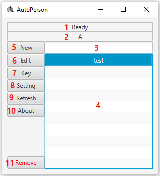

이번에는 Main Page에 대해 알아보도록 하겠습니다.
아래 있는 사진이 Main Page입니다.

| 번호 | 설명 |
|---|---|
| 1 |
실행 상태가 나타납니다. "Ready"는 실행 중인 스크립트가 없다는 뜻입니다. 초록색 글씨로 파일 이름이 나오면 그 스크립트가 실행 중이라는 뜻입니다. |
| 2 |
선택한 스크립트의 시작 버튼이 나타납니다. 시작 버튼을 누르면 그 스크립트가 실행됩니다. 스크립트가 실행 중일 때 같은 시작 버튼을 누르면 그 스크립트가 종료됩니다. 스크립트가 실행 중일 때 다른 시작 버튼을 누르면 실행 중인 스크립트가 종료되고 새로운 스크립트가 시작됩니다. |
| 3 | 스크립트 리스트의 검색창입니다. |
| 4 |
스크립트 리스트입니다. script 폴더 속에 있는 모든 파일을 나열합니다. 리스트는 알파벳순으로 정렬됩니다. |
| 5 | 새로운 스크립트를 만듭니다. |
| 6 |
선택한 스크립트를 수정하는 버튼입니다. 버튼을 누르면 Edit Page로 이동합니다. |
| 7 | 선택한 스크립트의 시작 버튼을 정합니다. |
| 8 | Setting Page로 이동합니다. |
| 9 | 스크립트 리스트의 새로고침 버튼입니다. |
| 10 | About Page로 이동합니다. |
| 11 | 선택한 스크립트를 삭제합니다. |